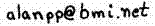

Version 1.004 (2019.01.26). Bold epithet = type
species
[Peters Checklist I(2):3 (Mayr 1979)][H&M 3rd:34][CBBM 27:571 (Salvadori 1895)][HBW 1:[83]]
STRUTHIONIFORMES
1 Genus 2 sp. (2010.01.16)
STRUTHIONIDAE
Comments & Suggestions
to Data Steward : Alan P. Peterson, M.D., POB 1999, Walla Walla,
WA 99362-0999,
Last updated 2019.01.26